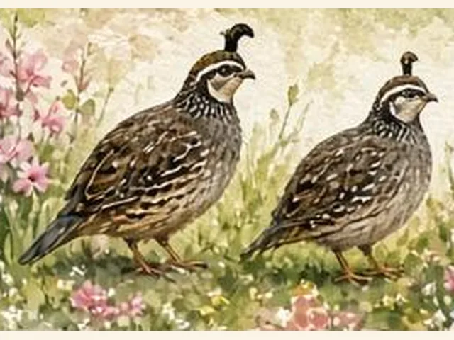
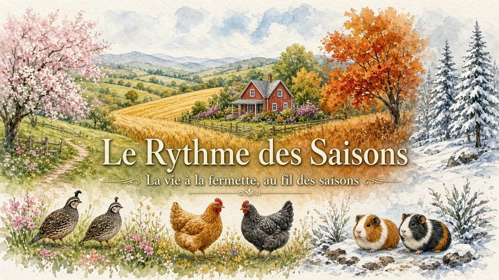
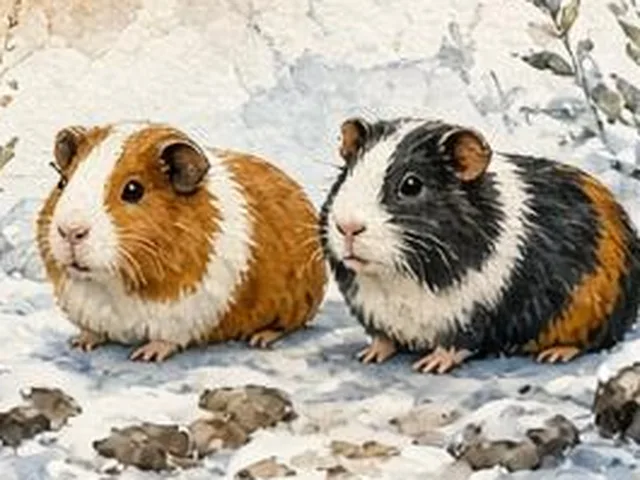

Cailles
Nos cailles japonaises sont petites, curieuses et bavardes. Leur chant doux rythme nos matins, et leurs œufs tachetés sont de vrais petits trésors.

La vie à la fermette, au fil des saisons
Bienvenue dans notre petite fermette familiale, tout près de Saint-Jean-sur-Richelieu.
Ici, on élève des cailles japonaises et des cochons d'Inde, avec patience et beaucoup d'attention. Chaque saison apporte son lot de surprises : des éclosions, des bébés qui grandissent, des projets faits main et de petits moments tout simples.
Notre rêve ? Une vraie fermette, un jour pas si lointain. En attendant, on partage le chemin avec vous, caméra à la main, et parfois avec Zackary, mon fiston, comme coéquipier.
— Marc-André

Nos cailles japonaises sont petites, curieuses et bavardes. Leur chant doux rythme nos matins, et leurs œufs tachetés sont de vrais petits trésors.

Les rois du foin ! Doux et gourmands, nos cochons d'Inde nous saluent avec leurs petits couinements dès qu'on ouvre le sac.
Suivez la fermette au fil des saisons sur notre chaîne YouTube.
Disponibilité selon la saison, sur réservation.
Ramassés chaque jour, petits et délicats.
Jeunes cailles japonaises élevées avec soin, prêtes pour leur nouveau foyer.
Pour compléter votre élevage ou démarrer un petit groupe.
Paiement : comptant ou virement Interac.
Cueillette : près de Saint-Jean-sur-Richelieu (lieu précisé à la réservation).
Une question, une réservation ou juste un petit bonjour ? Écrivez-nous !
Région : Saint-Jean-sur-Richelieu, QC